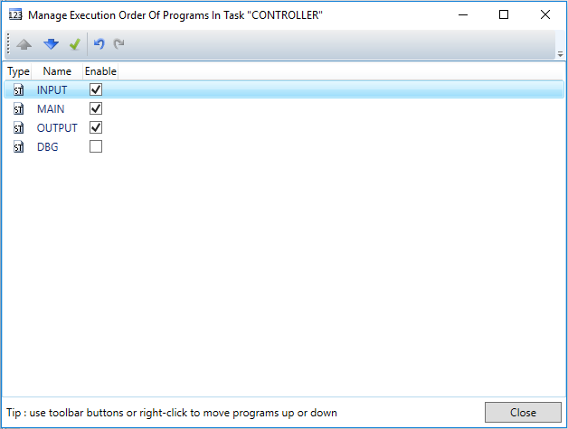

By default, programs created in a task are executed in the order they’ve been created. This means that if program A has been created before program B, when the task executes, its cycle will look like:
Program A
Program B
Other programs
Sometimes it is necessary to change the order of execution of programs in the task cycle. Motion Perfect provides this ability via the “Programs execution order” tool. It can be launched either from the context menu of the task in Controller and Project tree views, or from the task settings “Execution mode” page.

The tool lists all main programs in the task. Sub-programs and User defined function blocks are not listed here, because they are not executed in the cycle, but rather are called from other main programs.
|
Command |
Description |
|
Move up |
Moves the selected program up in the task cycle. This means that this program will be executed before programs at lower positions in the list |
|
Move down |
Moves the selected program down in the task cycle. This means that this program will be executed after programs at higher positions in the list |
|
Enable/Disable |
Enable or disable a program in the task cycle. When a program is not enabled, it will not be executed in the cycle, even though it will be compiled |
|
Undo |
Undo the last operation |
|
Redo |
Redo the last operation |
For example, there are three programs in the task
MAIN
INPUT
OUTPUT
DBG
MAIN program contains the main controller logic, INPUT program reads some digital inputs, OUTPUT writes to some analogue outputs, and DBG program contains some logging and debugging functionality, that is not needed in a production environment. They have been created in order “MAIN”, “DBG”, “INPUT”, “OUTPUT”. However, the execution order needs to be:
INPUT
MAIN
OUTPUT
The DBG program is only needed during development and tuning, so it is disabled in the task cycle by removing the corresponding check mark in the list.
Note that actions in this window are executed immediately and that changing the order of execution while the task is running is not allowed.